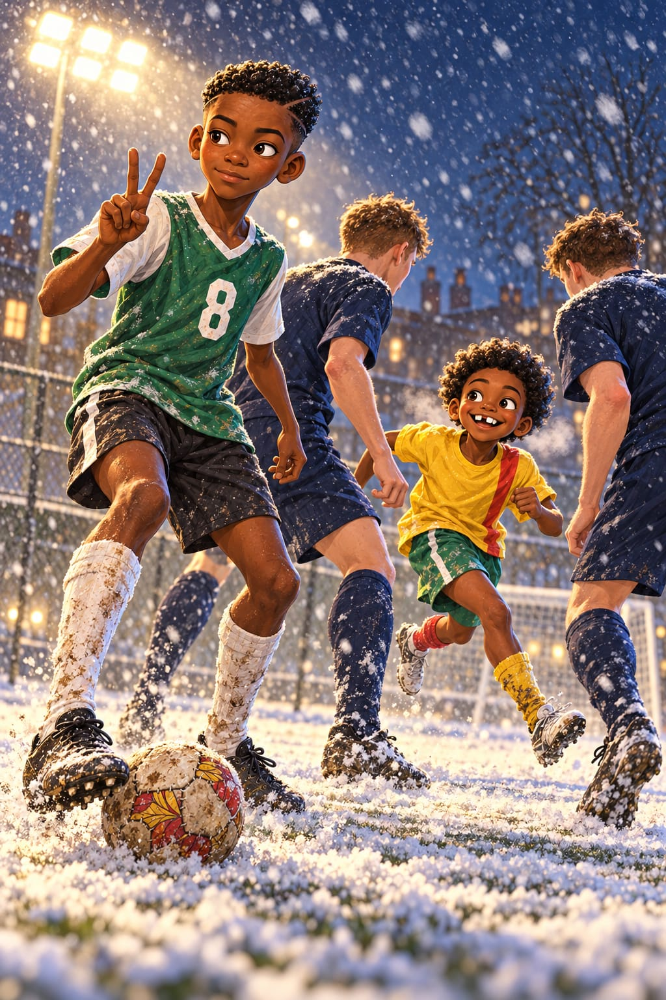
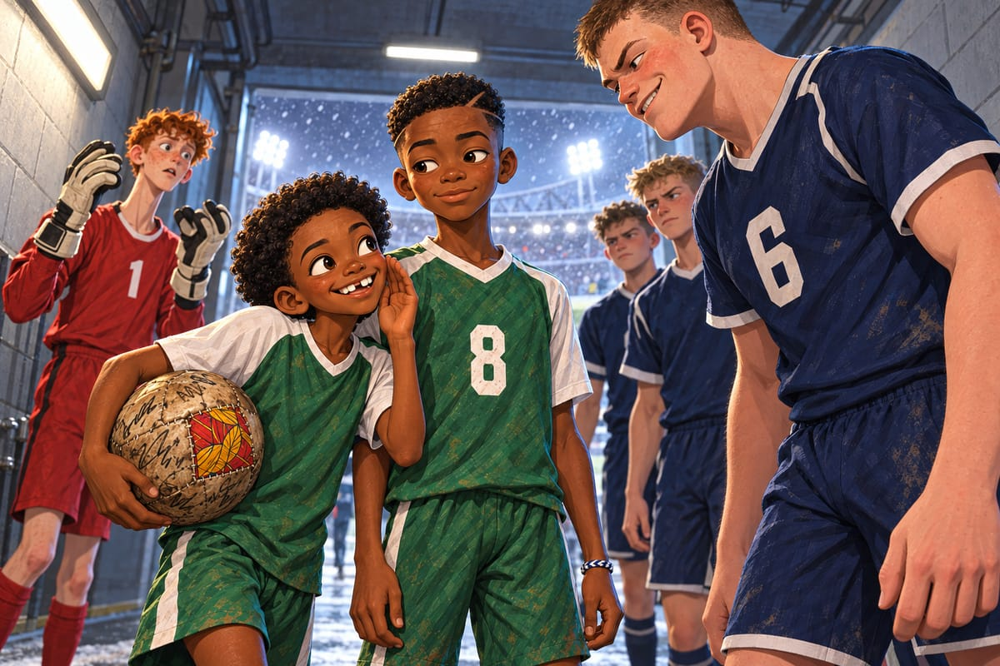
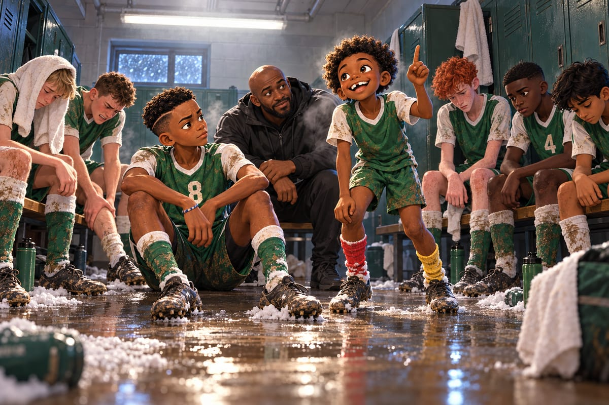

Le souffle

« Il neige ! »
Kaydoudou saute du car, lève la tête vers le ciel noir et ouvre la bouche.
Un flocon tombe sur sa langue.
« Même goût qu'à Waldorf, quand j'avais dix ans ! Rien du tout. Un rien glacé. »
« Tu as presque quatorze ans, soupire BriBri. Et tu manges encore la neige. »
« La neige anglaise, je ne l'avais pas encore goûtée. C'est pour la science. »
« Et alors, la science ? »
« Elle a un goût de demi-finale. »
Demi-finale de la Coupe des Académies, au nord de Londres, tout au bout d'une longue ligne de métro.
« Regarde ! s'écrie Kaydoudou. Une vraie tribune, avec un toit ! Et les projecteurs, ils sont hauts comme des immeubles ! Et les gens ont déjà de la neige sur les épaules ! »
Au vestiaire, Freddie lit le thermomètre : « Minus one ! » Moins un degré. Il enfile deux paires de gants, l'une sur l'autre.
« Tu ressembles à un homard », dit Kaydoudou.
« Un homard qui arrête tout », répond Freddie en faisant claquer ses pinces.
« Le TSV Rheinhafen, annonce Arjun. Une académie allemande. Ils viennent d'une ville de port, au bord du Rhin. »
Kaydoudou les regarde s'échauffer.
« Ils sont grands. Tous ! Ils courent en ligne, les genoux qui montent en même temps. Boum. Boum. Boum. Quand ils sprintent, le sol tremble. On dirait une armée de robots. »
« Ils ne sont jamais fatigués, eux, murmure Arjun. Ce sont des machines. »
« Les machines aussi tombent en panne, dit BriBri. Il suffit de trouver le bouton. »
« Et il est où, le bouton ? » demande Kaydoudou.
« Je ne sais pas encore. »
Avant de sortir, Arjun fait écouter la musique de sa grand-mère de Leicester. Des violons doux, qui montent en spirale.
« Et les crampons brillent, annonce Callum. Tous. »
Okafor ne fait pas de discours. Il montre juste la petite ardoise qu'il emporte maintenant à chaque match : NJANGI.
Dans le couloir, les frères sortent le ballon de Mami. Tête, cuisse, pied. Le ballon ne touche jamais le sol. Les Allemands les regardent sans comprendre.
« Eight, nine, TEN ! » compte Freddie.
Le numéro 6 allemand s'arrête devant Kaydoudou. Le plus grand de tous, avec des épaules immenses.
« Nice ball, small boy, dit-il en anglais. Joli ballon. Très vieux. Comme ton équipe. »
« Lui, c'est le Frigo, chuchote Kaydoudou. Le deuxième de ma vie, après le gardien du Maryland. Grand, froid, et il fait du bruit. »

Poing contre poing. Main sur le cœur.
Les vingt premières minutes sont un orage.
Rheinhafen presse comme Kingsbridge. Mais plus fort. Plus haut. Plus longtemps.
« Samir ! Derrière toi ! » hurle Freddie. « Trois sur toi ! Tom ! Trois sur Tom aussi ! Ils sont combien, ces gens-là ? »
Trois maillots bleu marine sur chaque défenseur vert, comme des pigeons sur une miette de pain. Freddie plonge. Se relève. Replonge.
« Des machines, gémit Arjun. Je vous l'avais dit ! »
23e minute. Centre allemand. Leur grand avant-centre blond saute plus haut que tout le monde. Tête. Sous la barre. Chhh.
0‑1.
« Sorry, lads ! » crie Freddie.
« Pas ta faute, Octopus ! » répond Tom.
Kaydoudou sent le froid entrer en lui. Pas le froid de la neige. L'autre.
Kingsbridge veut répondre en courant.
« Jaden, à droite ! Theo, coupe ! Plus vite ! »
Mais chaque ballon repris est reperdu en dix secondes.
« Doucement ! crie Okafor depuis son banc. Calm ! »
« On joue à la patate brûlante ! » râle Kaydoudou en passant près de son frère. « Personne ne veut le garder ! »
Juste avant la mi-temps, BriBri glisse une passe parfaite dans le dos de la défense. Jaden arrive lancé, comme un train qui entre en gare. Plat du pied, sans contrôle. Bam !
1‑1.
« Lamppost ! What a pass ! » crie Jaden.
« YES ! » rugit Okafor.
Mais au vestiaire, personne n'a l'air d'avoir gagné.
À la pause, on n'entend que des respirations. Hiii-haaa. Hiii-haaa.
Kaydoudou est assis par terre, le dos contre un casier. Theo a la tête sous une serviette. Tom se masse les mollets en grimaçant.
« Mes jambes ne sont plus à moi, souffle Kaydoudou. Quelqu'un a allumé un feu de bois sous mes cuisses. Et mes poumons font le bruit d'un vieil accordéon. »
« Les miens aussi », dit BriBri.
« Freddie ? Une blague ? »
Freddie secoue la tête. Pour une fois, il n'en a pas.
Okafor s'accroupit au milieu d'eux.
« Leurs jambes sont plus fortes. Accept it. Alors arrêtez de courir contre leurs jambes. »
Il ne dit rien d'autre. Il les laisse chercher.
Kaydoudou ferme les yeux.
Il entend la place de Vinyamar, le dimanche. Il voit Avi Ramon sous les platanes.
Kaydoudou rouvre les yeux d'un coup.
« Le ballon n'est jamais fatigué », dit-il.
Tout le monde le regarde. BriBri fronce les sourcils.
Kaydoudou se relève. Ses jambes crient. Il ne les écoute pas.

« En Espagne, il y a un vieux monsieur, Avi Ramon. Soixante-dix-neuf ans. Le dimanche, il joue au rondo sur la place du village, au milieu des enfants. Il ne court jamais. Il bouge à peine. Et il ne perd jamais le ballon ! À la fin, ce sont les taureaux qui ont les mains sur les genoux. Jamais lui. Vous savez pourquoi ? »
« The ball is never tired ! It runs faster than us, and it's never tired ! So we don't run. We let the ball run. We keep it. We pass it. They chase. And we… »
Il cherche le mot.
« We breathe. »
Nous, on respire.
Silence. Puis BriBri sourit, de son petit sourire en coin.
« Le rondo d'Avi Ramon », dit-il.
« Le rondo d'Avi Ramon », répète Kaydoudou.
« What's a rondo ? » demande Theo sous sa serviette.
« Un jeu de vieux, répond Kaydoudou. Les vieux ne courent pas. Et ils gagnent quand même. »
« Alors on joue comme des vieux », dit Jaden.
Okafor les regarde. Il hoche lentement la tête.
« Then show them. »
Alors montrez-leur.
La deuxième mi-temps commence sous une neige plus épaisse. De gros flocons tombent en biais dans la lumière blanche. La pelouse devient blanche par endroits, comme un drap posé sur un lit vert.
Et Kingsbridge change de visage.
Samir reçoit de Freddie. Il attend une demi-seconde.
« La pausa ! » souffle Kaydoudou.
BriBri s'offre entre les deux attaquants allemands, le corps ouvert. Kaydoudou recule. Avec Arjun et Jaden, ils forment un losange.
« Losange ! » appelle BriBri.
Et le ballon se met à tourner.
« Arjun ! »
« Jaden ! »
« Bri ! »
« Kaydoudou ! »
Une touche. Deux touches. Gauche, droite, en arrière, de côté. Le ballon voyage sans arrêt.
Et les Allemands courent.
« Regarde-les ! » Kaydoudou rit en passant près de son frère. « Ils courent à trois sur le ballon, et le ballon est déjà parti ! Ils courent de l'autre côté, et hop, il revient ! »
« Laisse-les courir », dit BriBri.
Dix minutes plus tard, Kaydoudou n'en revient pas.
« Bri ! Le feu baisse ! Je marche presque ! Je respire ! Mon accordéon joue une musique normale ! »
En face, le Frigo met les mains sur les hanches. Pour la première fois.
« Le Frigo est en panne ! » hurle Freddie depuis son but.
« C'est le bouton ! crie Kaydoudou. BriBri, j'ai trouvé le bouton ! »
« Alors appuie dessus ! »
« C'est ça ! Let it run ! Laissez-le courir ! » crie Okafor.
C'est le plus beau match de sa vie.
« Encore, Kaydoudou ! » crie BriBri.
« Scan, Socks ! » hurle Okafor.
Il scanne, deux fois, trois fois. Il joue avant le contact : les défenseurs bleu marine taclent la neige. Il fait la pausa, et le Frigo passe devant lui comme un bus qui rate son arrêt.
« Olé ! » crie quelqu'un dans la tribune.
C'est Papa.
71e minute.
Kaydoudou reçoit sur le côté gauche, à trente mètres du but. Deux défenseurs allemands foncent sur lui. Deux armoires bleu marine.
Il ne panique pas. Il conduit le ballon vers le milieu. Très lentement.
Venez. Venez tous les deux. Regardez-moi.
Le dribble njangi. Celui qui attire et qui donne.
Les deux Allemands mordent. Au dernier moment, Kaydoudou donne à BriBri, seul dans le trou qu'ils ont laissé.
BriBri ne tire pas.
Il lève deux doigts.
Et le temps s'arrête.
La neige reste suspendue dans la lumière. Le numéro 8 brille sur le maillot vert sombre aux manches blanches. Kaydoudou sent les flocons dans son afro. Il voit le petit nuage blanc qui sort de sa bouche.
Les deux doigts. Comme sur la terre rouge.
Il part. Avant même de réfléchir. Un grand sourire aux lèvres. Dans le dos des deux Allemands.
BriBri remet d'une seule touche. Le ballon glisse sur la neige, pile dans sa course.
« LE UNE-DEUX DU NJANGI ! » hurle une voix dans la tribune. Papa, encore.
Kaydoudou est seul face au gardien, sous les flocons. Il ouvre le pied. Il place le ballon à ras du poteau. Tout doucement. Presque poliment.
Chhh.
2‑1 !
Il court au poteau de corner. La neige tombe comme des confettis. Main sur la hanche, doigt vers le ciel : la danse de Roger Milla. Freddie arrive de son but en glissant sur les genoux.
« Je suis un homard très heureux ! »
BriBri arrive le dernier. « Tu vois ? Le ballon n'est jamais fatigué. »
« Moi non plus, maintenant ! »
Les vingt dernières minutes, Kingsbridge garde le ballon. Les Allemands courent. Au coup de sifflet final, ce sont eux qui s'assoient dans la neige.
Kingsbridge Albion est en finale.
Kaydoudou va tendre la main au Frigo, assis dans la neige.
« Very old ball, dit-il. But never tired. »
Le Frigo le regarde longtemps. Puis il prend sa main. « Good game, small boy. »
« FI-NALE ! FI-NALE ! » chante tout le vestiaire, en sautant sur les bancs.
« Le bouton, hein ? » dit BriBri en ébouriffant l'afro de son frère.
« Le bouton ! »
Le soir, la neige a bloqué la moitié des trains. L'équipe dort dans un petit hôtel près du stade. Les frères partagent une chambre avec Papa et Maman, venus voir le match.
Kaydoudou est allongé en travers du lit, en chaussettes, une rouge et une jaune. Il raconte son but pour la cinquième fois.
« Et là, les deux doigts. Et là, fiouuu, je pars ! Et là, chhh, le filet ! »
« On sait, dit Maman. On était là. »
« Mais vous n'aviez pas les bruitages. »
« Sixième fois, compte BriBri. Et toujours les bruitages. »
« Parce qu'il est de mieux en mieux, ce but. »
Papa est assis près de la fenêtre. Il a un drôle d'air.
« Il a sa tête du Maryland, chuchote Kaydoudou. Celle du soir de l'appel pour Paris. »
« J'ai une surprise », dit Papa.
Kaydoudou se redresse. BriBri aussi.
« Un chien ? Une glace ? Un autre match ? »
« Mieux. »
« J'ai parlé à Mami ce soir. » Papa fait une pause, comme Avi Ramon avec le ballon. « Le njangi des femmes de Bafoussam s'est réuni dimanche. Et ce mois-ci, la caisse est allée à Mami. »
« Pour sa hanche ? » demande BriBri.
« C'est ce que tout le monde croyait. » Papa sourit. Ses yeux brillent. « Mais elle a pris tout l'argent de la caisse. Et elle s'est acheté un billet d'avion. Elle a dit : je veux voir mes lions en vrai. »
« Mami vient à Londres, dit Maman doucement. Pour la finale. »
Kaydoudou hurle.
Un cri qui part des chaussettes, traverse tout son corps et sort par le haut de sa tête. Il saute sur le lit. Il saute par terre. Il saute dans les bras de BriBri, qui tombe à la renverse.
« MAMI ! MAMI DANS L'AVION ! »
« Kaydoudou ! s'écrie Maman. Il est onze heures du soir ! »
Drrring ! Trois secondes plus tard, le téléphone de la chambre sonne.
Papa décroche et répond très poliment, en anglais.
« Yes. Yes, I understand. I'm very sorry. It's my son. His grandmother is coming. »
Il raccroche.
« C'était la réception. Ils voulaient savoir si quelqu'un était blessé. »
« Personne n'est blessé ! » hurle Kaydoudou vers la porte. « On est heureux ! »
« Arrête, tu m'écrases ! »
Sous lui, BriBri rit si fort qu'il pleure. Ou il pleure si fort qu'il rit. Kaydoudou ne sait pas.
Il sait seulement une chose. Mami n'a jamais pris l'avion de sa vie.
Et elle va traverser le ciel pour eux.